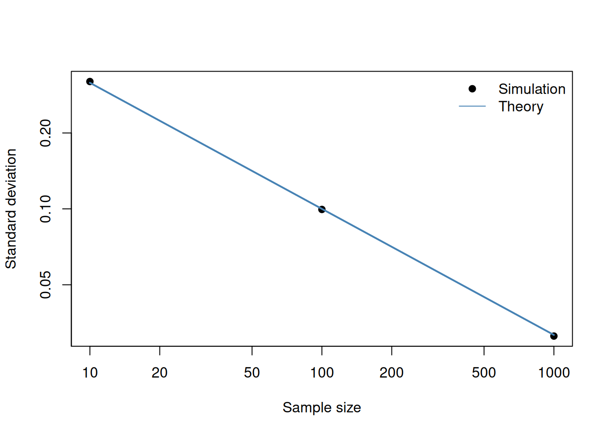

Code
source("scripts/R/001-monte-carlo.R")Status: demonstration. Can a standalone R script supply the book’s table and figure without copying results by hand?
For independent standard normal observations, the sample mean has expectation zero and standard deviation \(1/\sqrt{n}\). This is a theoretical result; the simulation illustrates its numerical behavior.
The downloadable R script uses seed 20261010, 2,000 repetitions, and sample sizes 10, 100, and 1,000. Run it independently from the repository root:
Rscript scripts/R/001-monte-carlo.RThe book executes that same script when rendered:
source("scripts/R/001-monte-carlo.R")knitr::kable(mc_results, digits = 4)| sample_size | repetitions | empirical_mean | empirical_sd | theoretical_sd |
|---|---|---|---|---|
| 10 | 2000 | -0.0058 | 0.3199 | 0.3162 |
| 100 | 2000 | 0.0025 | 0.0995 | 0.1000 |
| 1000 | 2000 | -0.0014 | 0.0313 | 0.0316 |
plot(mc_results$sample_size, mc_results$empirical_sd,
log = "xy", pch = 19, xlab = "Sample size", ylab = "Standard deviation")
lines(mc_results$sample_size, mc_results$theoretical_sd, col = "steelblue", lwd = 2)
legend("topright", c("Simulation", "Theory"),
pch = c(19, NA), lty = c(NA, 1), col = c("black", "steelblue"), bty = "n")
Table A.1 and Figure A.1 compare simulated variability with the analytical prediction. Differences reflect finite Monte Carlo sampling. A simulation can provide evidence or a counterexample; it does not replace a general mathematical proof.
This example does not establish any I-MAP finding.
sessionInfo()R version 4.4.2 (2024-10-31)
Platform: x86_64-pc-linux-gnu
Running under: Ubuntu 24.04.5 LTS
Matrix products: default
BLAS: /usr/lib/x86_64-linux-gnu/openblas-pthread/libblas.so.3
LAPACK: /usr/lib/x86_64-linux-gnu/openblas-pthread/libopenblasp-r0.3.26.so; LAPACK version 3.12.0
locale:
[1] LC_CTYPE=C.UTF-8 LC_NUMERIC=C LC_TIME=C.UTF-8
[4] LC_COLLATE=C.UTF-8 LC_MONETARY=C.UTF-8 LC_MESSAGES=C.UTF-8
[7] LC_PAPER=C.UTF-8 LC_NAME=C LC_ADDRESS=C
[10] LC_TELEPHONE=C LC_MEASUREMENT=C.UTF-8 LC_IDENTIFICATION=C
time zone: UTC
tzcode source: system (glibc)
attached base packages:
[1] stats graphics grDevices utils datasets methods base
loaded via a namespace (and not attached):
[1] compiler_4.4.2 fastmap_1.2.0 cli_3.6.6 tools_4.4.2
[5] htmltools_0.5.9 yaml_2.3.12 rmarkdown_2.32 knitr_1.52
[9] jsonlite_2.0.0 xfun_0.61 digest_0.6.39 rlang_1.3.0
[13] evaluate_1.0.5